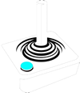

Hi There, I'm Ana Phi Sancho!
A KNOWLEDGE ADVENTURER AND TECHNOLOGY EXPLORER

You can see me as the person who solves problems by working autonomously and interacting with creative people - blending code and aesthetics emerging from technology. I have experience as an Audiovisual technician.
Also, recently I updated Knowledge as a software developer - developing Computer Science programming skills.
I find it refreshing to step outside of my comfort zone and aim to explore a wide diversity of digital technologies to flow knowledge in Audio/Visual Design and Programming, network virtualization environments or hardware components interaction.
I feel passionate about solving computational problems, sharing knowledge in Computer systems (hardware or software) and exploring appropriate analytical instruments/Design thinking methods.
IT'S ABOUT THE JOURNEY, NOT THE DESTINATION :
I started out with the ZX Spectrum or self made/self-taught hardware solutions. I first contacted with kinect, RaspberryPi and Arduino at the University of Porto - Sound & Image - creating servers, Open Source projects network; besides artistic interactive platforms projects.
So I understand well, the transition of analog to digital. Continuously developing new techniques in the computational field. Keeping up with social media and its future developments in digitization: IOT(Internet of things), artificial intelligence, and automation that supercharge performance and enabling the emergence of new business innovations.
Technology itself continues to evolve creating performance and productivity opportunities for business and even reshape the way we imagine social network as it interacts with the future. Reason why I believe in continuing professional development through courses or training.

Besides Prototyping and Editing I've been training in new media technology using VR/AR/MR - web development/app-interactive media solutions for new media platforms that respond to the users action,
such as inter-connectivity systems between text,Kinesics & metacommunication artifact-video/audio.## Support
 Buy me a coffee
###
Buy me a coffee
###
Search:
Video Editor
Web development
Programming
Software
Hardware
Computer and Audiovisual Systems & components
.
.
@2020
Besides Prototyping and Editing I've been training in new media technology using VR/AR/MR - web development/app-interactive media solutions for new media platforms that respond to the users action,
such as inter-connectivity systems between text,Kinesics & metacommunication artifact-video/audio.## Support
 Buy me a coffee
###
Buy me a coffee
###
Search:
.
.
@2020